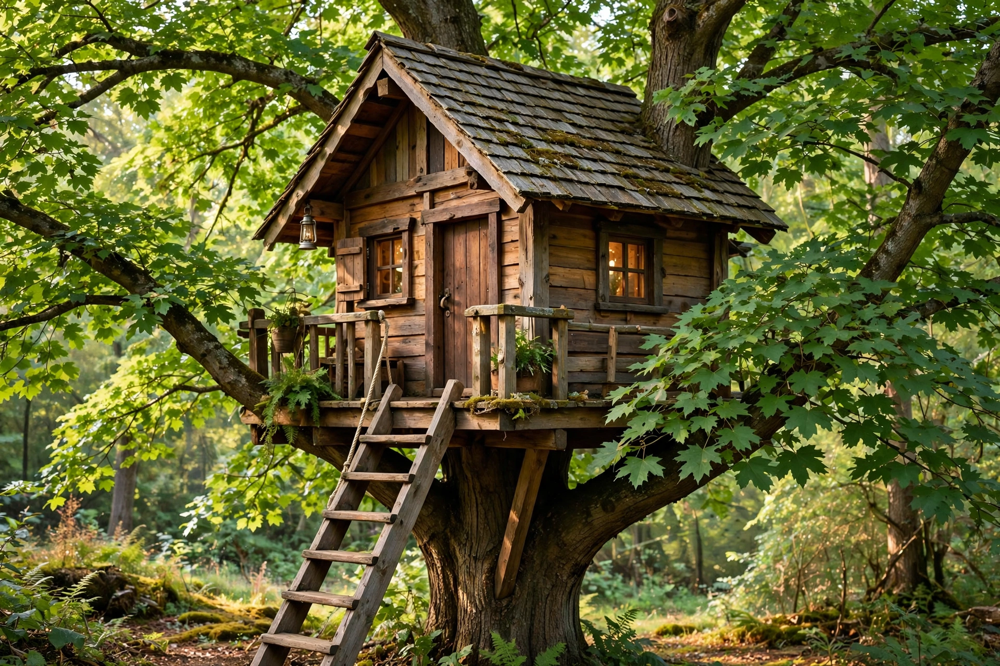

A tree house, tree fort or treeshouse is a platform or building constructed around, next to or among the trunk or branches of one or more mature trees while above ground level. Tree houses can be used for recreation, work space, habitation, observation or as temporary retreats.
Tree dwellings have long been built by indigenous peoples such as the Korowai of New Guinea, who raised houses high above the ground for defence and to avoid floods and pests. In Europe, elaborate tree houses became fashionable ornaments in aristocratic gardens from the 19th century.
Builders must allow for tree growth and movement: attachment methods include treehouse attachment bolts (TABs), floating brackets and suspension from upper branches. A single healthy, mature tree with strong branching is usually preferred, and local planning rules may apply.
Beyond children's playhouses, tree houses now include hotels, restaurants and eco-lodges worldwide, and television series have popularised custom builds. Some communities use them for protest occupations against road building and logging.